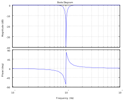
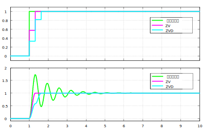

机械振动抑制
创建于2021-4-3
该项目完成于2019-10，原创
该项目完成于2019-10，原创
在伺服控制系统中，减速器、联轴器等弹性连接装置的存在使得系统在运行过程中可能会产生机械振动。振动的存在会影响系统的定位精度，还可能会产生较大的噪音，同时，电机的转矩电流也会随之产生波动，严重时可能会导致过流等故障，影响系统正常运行。机械振动的抑制对于提高伺服系统性能有着较大的意义。
对于中高频率的机械振动，可以使用陷波器对转矩进行滤波，使其不包含与振动频率相同的分量，从而起到抑制振动的作用。双T型陷波器是一种常用的陷波器，其幅频特性如下图所示，通过设计合理的陷波器深度和宽度，可以达到最佳的振动抑制效果。

对于低频振动，陷波器的抑制效果不佳。陷波器中心频率较低时，会引入较大的延时，从而影响系统控制性能。对于低频振动引起的末端抖动，可以使用输入整形进行抑制。输入整形通过将给定信号进行处理，也就是重新设计给定信号的形状，实现末端抖动抑制。下图为位置给定为阶跃信号时，输入整形算法的测试结果，上半部分为给定位置的波形，下半部分为反馈位置的波形。根据下图可以看出，当不使用输入整形时，反馈位置有较大波动，波动几个周期后才稳定，而使用ZV或者ZVD整形器对输入信号进行处理以后，反馈位置不再抖动，这就达到了抑制振动的目的。输入整形器有多种类型，各有特点，这里不再一一介绍。

如果在运行过程中产生低频振动，输入整形就不再起作用，这时候就需要使用其他的办法对振动进行抑制，具体实现方式这里不再展开介绍。